D Instruments
D.1 Ultrasound
D.1.1 Usage
Turn on the ultrasound by pressing the power button in the top left of the keyboard.
Locate the vastus lateralis. Find the ASIS (anterior superior iliac spine) by asking the participant to place their hands on their hips and feeling for the bony protrusion at the front of the hip. Measure from the top of the kneecap to the ASIS. Locate the vastus lateralis by moving superior to the kneecap on-third of the distance from the kneecap to the ASIS.
Use the ultrasound gel to cover the wand.
Place the wand over the pre-determined location of the vastus lateralis. Move around the wand until you find the location of the thinnest section of adipose tissue. Ensure that this is still over the vastus lateralis by marking the location with a marker, then removing the wand and asking the patient to extend their leg and flex their quadriceps muscles. If the dot is not on top of the vastus lateralis when the patient extends their leg, try again. If the dot is over the vastus lateralis, place the wand back over the dot.
Freeze the screen.
Press the ‘caliper’ button to use calipers on the frozen screen.
Move one end of the caliper to the top of the screen. Move the other end of the caliper to the area of the screen that looks like the boundary between the muscle belly and the edge of the adipose tissue. This will be a silvery line across the screen. Try to make the caliper measurement as vertical as possible, as a diagonal measurement will be larger than a straight one.
Record the measurement given by the caliper.
D.2 Lactate Meter
D.2.1 Usage
D.2.1.1 Quality Control Testing
Before using the lactate meters, you must conduct a quality control test.
Get out the ‘Blood Lactate Meter’ binder from Frankie Bennet’s desk. Open the binder to the quality control log.
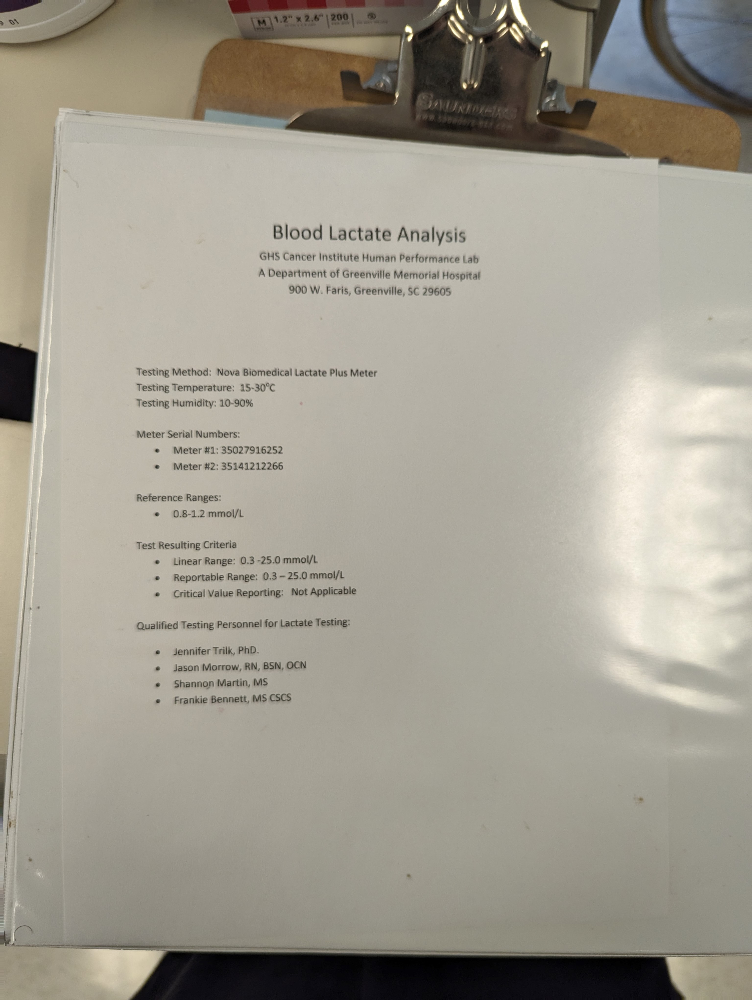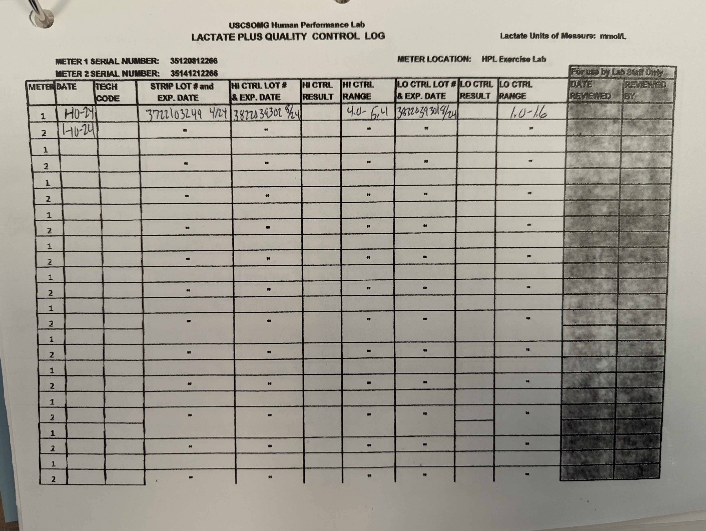
Record the date.
Look on the bottle of lactate strips and find the lot number. Record the lot number in the appropriate space.
 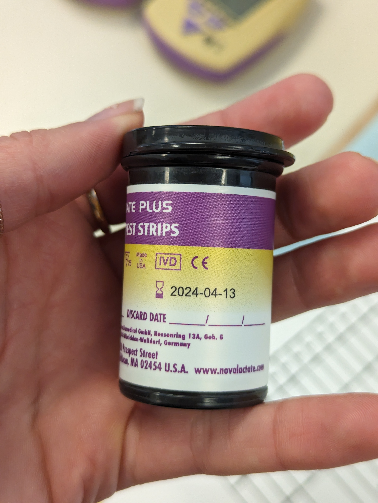
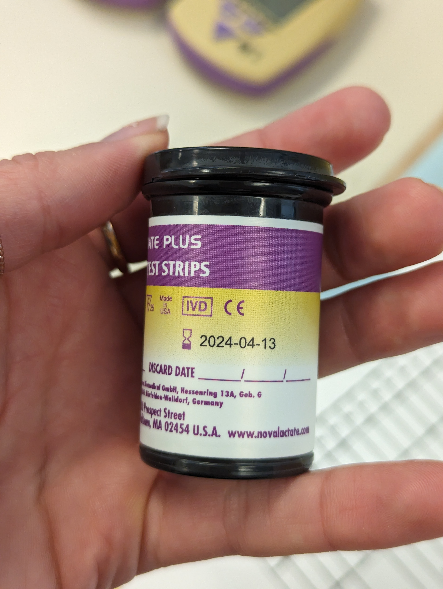
Look on the low control bottle (blue dropper). Record the expected range for this bottle. Record the lot number and expiration date.
 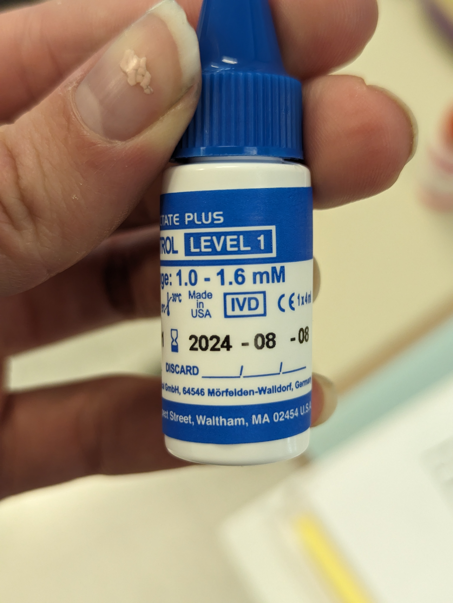
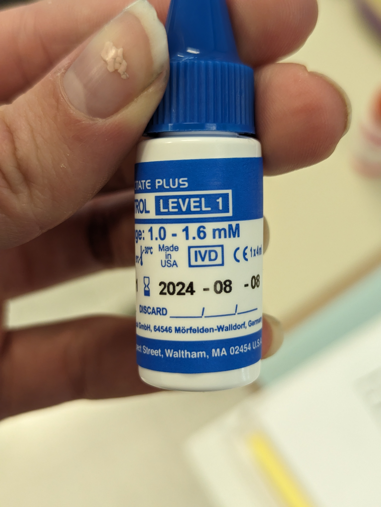
Look on the high control bottle (red dropper). Record the expected range for this bottle. Record the lot number and expiration date.
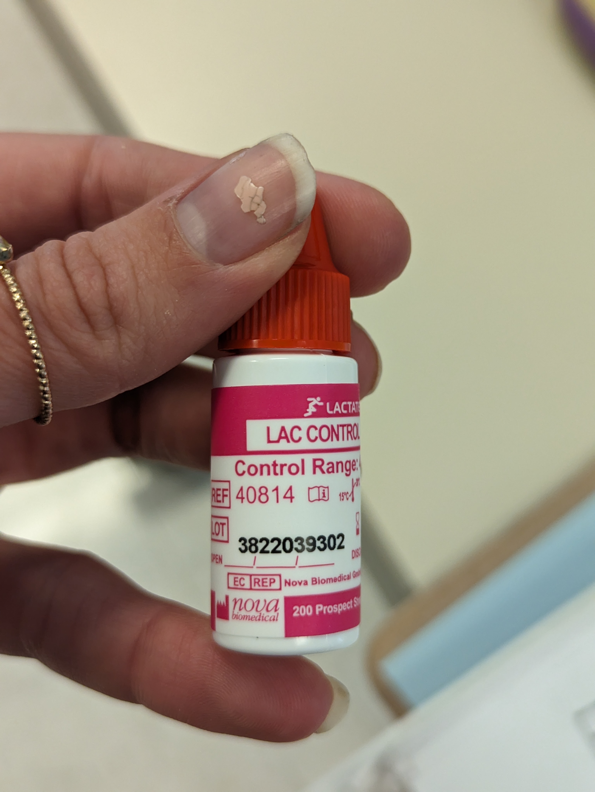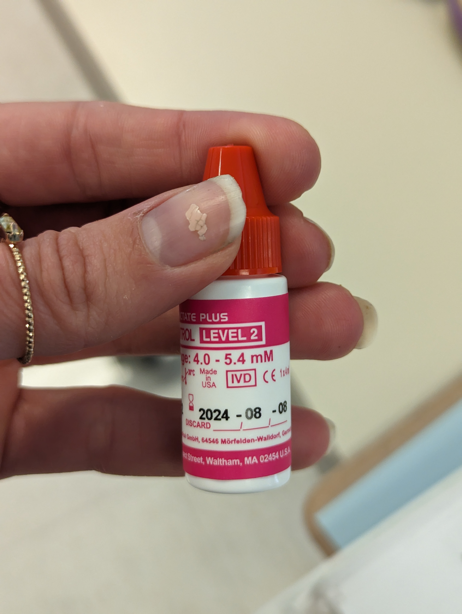
Turn on the lactate meter by pressing the center triangle-shaped button. Use the button to click through the screens until you reach the control screen. which has a star in the upper left corner and says ‘CRL-1’.
Put a lactate strip in the lactate meter. The white end should stick out from the meter and the metal end should go in the meter.
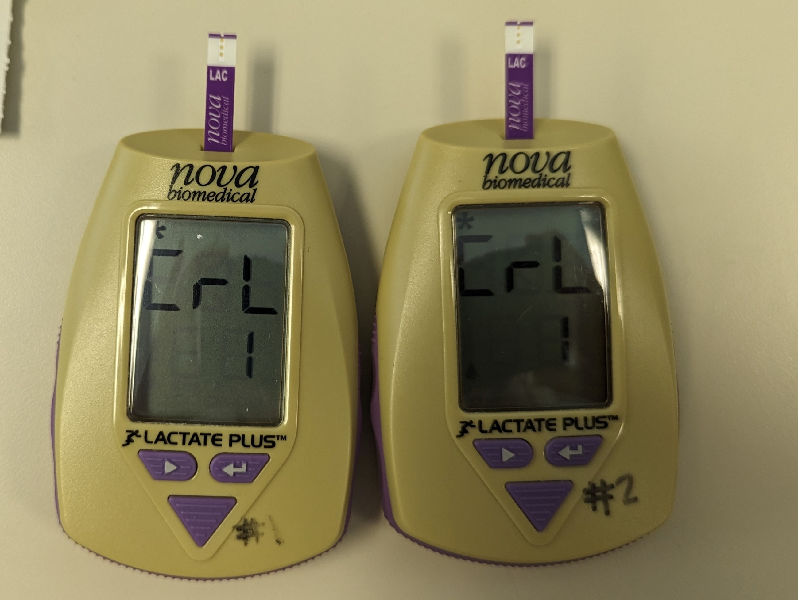
Use the red control dropper to place a drop on the lactate strip. Wait for the lactate meter to give results (about 15 seconds). Record the results in the binder. Discard the used lactate strip in the trash and do another test with the red control with a new lactate strip.
If you get an error, you probably did not use enough liquid. Make sure the drops are of a size to completely soak the tip of the lactate strip.
Repeat with the blue control dropper.
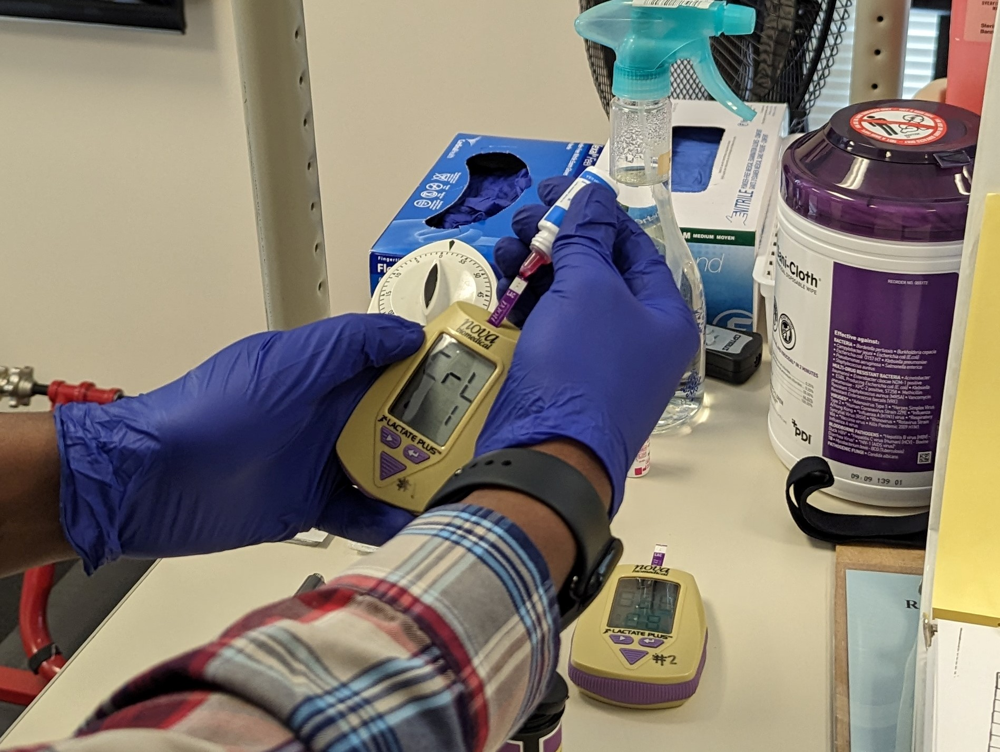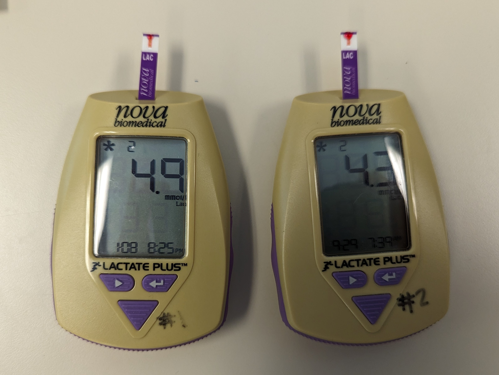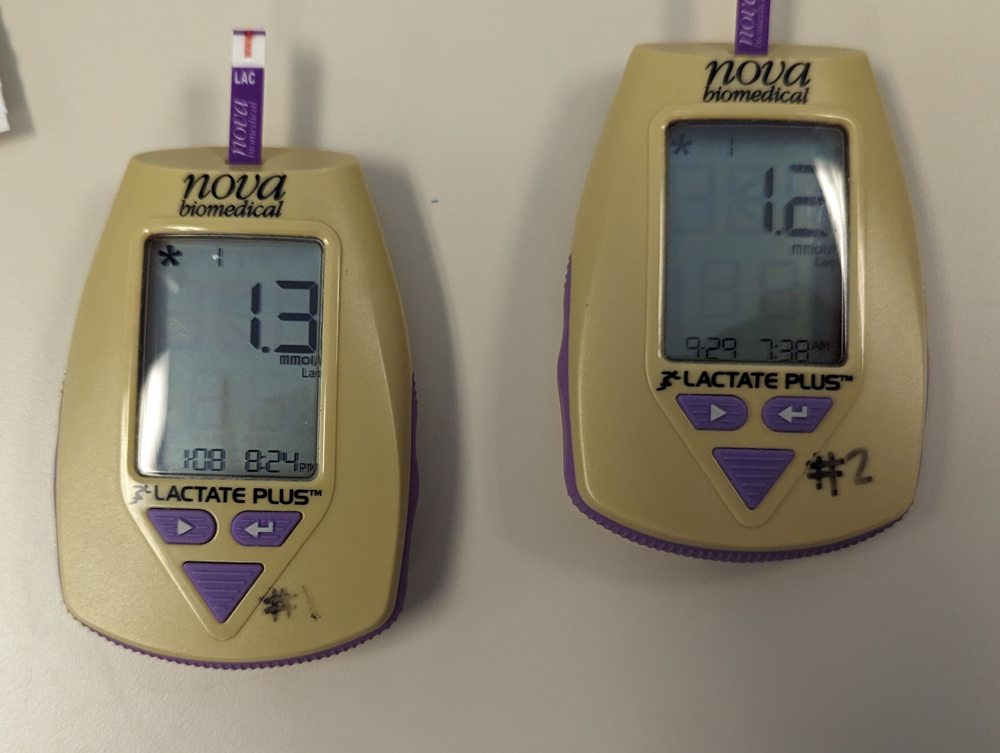
Make sure results are recorded correctly in the log.
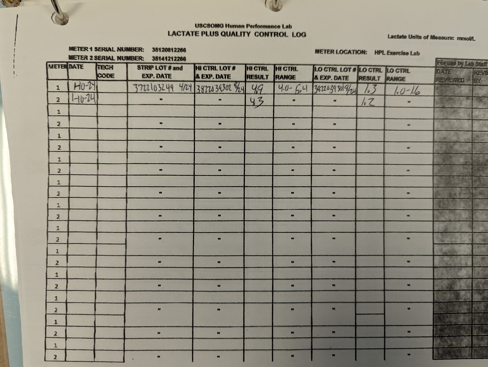